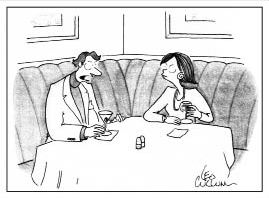

Eski Başkan William Jefferson Clinton,
"Bu budur derken bu'nun ne olduğu, bu'dan
ne kastettiğinize bağlı", dediğinde Din Felsefesi
yapıyordu. Başka şeyler de yapıyordu belki.
DIMITRI: Nihayet ciğerini okumaya başladım, Tasso. Bu felsefe aslında sözcüklerle oynamaktan ibaret!
TASSO: Kesinlikle! Şimdi bir yerlere varmaya başladık işte!
DIMITRI: İtiraf ediyorsun yani? Felsefe sırf semantikten ibaret!
TASSO: Sırf semantik ha? Ulan başka neyle felsefe yapacaksın? Homurtu ve kıkırtılarla mı?
Gündelik Dil Felsefesi
Ludwig Wittgenstein ve Oxford Üniversitesi'ndeki takipçileri, yirminci yüzyıl ortalarında klasik felsefi meselelerin —özgür irade, Tanrı'nın varlığı, vesaire— sadece karışık ve kafa karıştırıcı dil kullanılarak sorulduğu için kafa karıştırıcı olduklarını öne sürdüler. Filozof sıfatıyla görevleri dilsel düğümleri çözmek, soruları yeniden kurmak ve bilmeceleri çözmek dışındaki diğer en iyi şeyi yapmak, yani bilmeceleri ortadan kaldırmaktı.
Örneğin Descartes on yedinci yüzyılda insanların bir zihin ve bir bedenden oluştuğunu ilan etmişti (zihin "makinedeki hayalet" gibi bir şeydi). Bunun ardından filozoflar bu hayalet ne mene bir şeydir diye kafa patlatmıştı. Wittgenstein'ın Oxford'dan takipçisi Gilbert Ryle ise şöyle dedi: "Soru yanlış! Ne mene bir şey değildir çünkü bir şey değildir. Sözde zihinsel-olaylar hakkında konuşmalarımıza bakarsak sözcüklerimizin aslında davranışları betimlemede birer kestirme yol olduğunu görürüz. Davranışın geldiği söylenen yerden bahsederken 'yer' sözcüğünü atıverdiğimizde hiçbir şey yitmez." Hop, attık gitti!
Aşağıdaki fıkrada rol alan genç çiftinse sorunun çerçevesini değiştirmelerinin gerektiği gayet açıktır:
Yeni evli genç çift, yeni dairelerine taşınırlar ve salonlarındaki duvar kâğıdını değiştirmeye karar verirler. Salonu aynı büyüklükte olan komşularına başvururlar.
"Hanımefendi, acaba salonunuzu kaplatmak için kaç top duvar kâğıdı almıştınız?"
"Yedi."
Bunun üzerine genç çift, en pahalısından yedi top duvar kâğıdı satın alır ve kaplama işine girişir. Ancak salonun duvarları dördüncü top bittiğinde tamamen kaplanır. Sinirlenen genç karı-koca derhal komşularının kapısını çalar: "Dediğinizi yaptık ama üç top arttı!"
"Ha," der komşu, "size de aynısı oldu demek."
* * *
Şair Gertrude Stein ölüm döşeğindeyken sevgilisi Alice B. Toklas kulağına eğilir ve fısıldar: "Yanıt ne, Gertrude?"
Stein yanıtlar: "Soru ne?"
* * *
Wittgenstein, Batı felsefesindeki bütün hataların suçunu, "dil tarafından büyülenme" dediği şeyde buluyordu. Bundan kastettiği, sözcüklerin bizi kandırıp "şeyleri" yanlış kategorilere sokmamıza yol açabileceğiydi. Felsefi soruların soruluşunda kullanılan cümlelerin dilbilgisel biçimleri tarafından aldatılıyorduk. Örneğin, Heidegger başyapıtı Varlık ve Zaman'da "hiçlik"i tuhaf bir şeyi gösteriyormuş gibi tartışmıştı. Aşağıda dilsel karışıklığa dair bir başka örnek var:
"İnşallah yüz yaşını görür, artı yaklaşık üç ay yaşarsın."
"Sağol, arkadaşım... Da, üç ay nesi?"
"Aniden ölüvermeni istemem."
Buradaki "arkadaşın" dilsel karışıklığa düştüğü fikrindeyseniz bir de şuna bakın:
Adam psikiyatra gider ve asla bir kız arkadaş edinemediğinden yakınır.
"E, şaşırmadım," der psikiyatr. "Berbat kokuyorsunuz!"
"İşim yüzünden," diye yanıtlar beriki. "Sirkte çalışıyorum; fillerin peşinden gidiyor ve dışkılarını temizliyorum. Ne kadar yıkansam gitmiyor koku."
"E, o zaman işinizi bırakıp başka işe girin."
"Deli misiniz? Gösteri dünyasından ayrılayım mı yani?"
Burada adamcağız, kendi durumunda fil pisliği temizlemeyi de içeren "gösteri dünyası" tanımlamasının anlamını, aynı tanımlamanın spot ışıklarının altında bulunmanın her şeye değdiği imasını da içeren yan anlamlarıyla karıştırmaktadır.
Gündelik dil filozoflarına göre dilin birden fazla amacı vardır ve farklı bağlamlarda farklı kullanılır. Oxford filozoflarından John Austin, "Yemin ederim," demenin, "Boya yapıyorum," demekten çok farklı bir dilsel yerde durduğuna dikkat çeker. "Boya yapıyorum," demek, boya yapmakla aynı şey değilken, "Yemin ediyorum," demek yemin etmekle aynı şeydir. Bir dilsel çerçeveye uygun dili başka bir dilsel çerçeve içinde kullanmak felsefi karışıklıklara ve yapay bilmecelere yol açmaktadır — bu duruma felsefenin tarihi de denebilir.
Gündelik dil filozofları, asırlara dayanan Tanrı inancı tartışmalarının, meseleyi olgunun çerçevesine almaya kalkışmaktan doğduğunu düşünmüşlerdi. Dinsel dil, bambaşka bir dildir diyorlardı. Bazılarıysa dinsel dilin, sinema eleştirmenlerinin kullandığı türden bir değerlendirmeci dil olduğu fikrindeydiler. "Tanrı'ya inanıyorum," demek gerçekte sadece, "Beş üzerinden beş yıldız verdiğim bazı değerlere inanıyorum," demekti. Kimileriyse dinsel dilin duyguları ifade ettiği görüşündeydi: "Tanrı'ya inanıyorum," demek, "Evreni düşündüğümde tüylerim ürperiyor!" anlamına geliyordu. Bu alternatif dillerin hiçbiri sizi, "Tanrı'ya inanıyorum," diyerek düştüğünüz felsefi bataklığa sokmuyordu. Pof! İşte bilmece çözüldü! Ve 2.500 yıllık din felsefesi, hop, at sepete!
James Bond'un milyarder düşmanı Goldfinger, konuğu Fransız işadamı Bay Fallaux ile yat gezisine çıkar. İlk akşam yemeğine oturduklarında adam kadeh kaldırır ve "Bon apetit!" der.
Bunun üzerine Goldfinger da kadehini kaldırır ve "Goldfinger!" der.
Günler geçer, her yemekte aynı kadeh kaldırma ve cümleler sarf edilir. Ancak yatın kaptanı sonunda dayanamaz ve Goldfinger'a, "Bon apetit"nin Fransızca "Afiyet olsun!" demek olduğunu anlatır.
Utanan Goldfinger, hatasını affettirmek için sabırsızlıkla akşam yemeğini bekler. Nihayet sofraya oturduklarında, Bay Fallaux daha bir şey diyemeden Goldfinger kadehini kaldırır ve "Bon apetit!" der.
Bay Fallaux gülümser ve kadehini kaldırır: "Goldfinger!"
Karakterlerin farklı dertlerinin olduğu fıkralar, farklı dilsel çerçevelerin iletişimi nasıl batağa saplayabileceğine dair komik benzeştirmeler sunar:
Tommy günah çıkarmaya gider ve kabinde rahibe, "Bağışla beni baba, günah işledim," der. "Yollu bir kadınla birlikte oldum."
Rahip, "Sen misin,Tommy," diye sorar.
"Evet, Peder. Benim."
"Kimle birlikte oldun, Tommy?"
"Söylemesem daha iyi, Peder..."
"Bridget miydi?"
"Hayır."
"Colleen?"
"Hayır, Peder."
"Megan mıydı, peki?"
"Cık."
"Peki,Tommy. Dört defa 'Babamız', dört defa da 'Bakire Meryem' duası oku."
Tommy kiliseden çıkar, dışarıda bekleyen arkadaşı Pat, günah çıkarmanın nasıl geçtiğini sorar.
"Şahane," der Tommy. "Sekiz dua ile üç süper tüyo aldım."
Bir sonraki fıkradaysa rahip kendi anlayış çerçevesine sıkışmıştır ve bir diğer çerçeve olasılığını görememektedir.
Adamın biri günah çıkarma kabinine girer. "Peder," der, "ben yetmiş beş yaşındayım ve dün gece iki tane yirmilik kızla seviştim. Hem de aynı anda."
Rahip, "En son ne zaman günah çıkartmıştınız?" diye sorar.
"Hiç çıkartmadım, peder.Yahudi'yim ben."
"E, o zaman ne diye bana söylüyorsun be adam?"
"Herkese söylüyorum!"
Cümlenin başka bir bağlama konduğunda tamamen farklı anlam taşımasına dayanan birçok fıkra vardır. Komikliği sağlayan bu iki bağlamın sürtüşmesidir.
Piyanistin çaldığı her şarkıdan sonra bahşiş toplayan maymun, yine bir şarkının sonunda bara sıçrar, gider ve barda oturan bir adamın önündeki bardağın üstüne çömelip testislerini içkiye batırır. Adam sinirlenir, kalkar, piyanistin başına dikilir:
"Demin piyanonun üstünde duran maymun gelip taşaklarını viskime batırdı, biliyor musun?"
"Hayır. Ama biraz mırıldanırsanız çıkartabilirim herhalde."
Birçok fıkra, bizi bir dil çerçevesindeyken başka bir dil çerçevesinde bulunduğumuzu zannettirmek üzerine kurulmuştur:
"Şunlardan hangisi diğer ikisinden farklıdır: uçuk, bel soğukluğu, Cleveland'da apartman dairesi."
"Kolay. Tabii ki daire..."
"Hayır, bel soğukluğu... Diğer ikisinden ömür boyu kurtulamazsın."
Gündelik dil felsefesi sadece sözcük oyunlarından ibaret diye eleştirildi ama Wittgenstein, dilsel çerçevelerin karıştırılmasının ölümcül hatalara yol açacağında ısrarlıydı.
Adam, hastanede can çekişen arkadaşını ziyarete gider. Başucunda kederle oturduğu sırada arkadaşının durumu iyice kötüleşir ve birden çılgınca el hareketleriyle kalem-kâğıt istediğini belirtir. Bunun üzerine beriki ceplerini karıştırır ve bir kâğıt parçasıyla kalemini uzatır. Hasta son gücünü kullanarak bir şeyler karalar ve kâğıdı uzatırken son nefesini verir. Beriki en yakın arkadaşını kaybetmenin üzüntüsüyle notu hemen okuyamaz, cebine atar.
Ertesi gün, cenazeden sonra arkadaşının evine gider. Baş sağlığı konuşmaları sırasında cebine attığı notu anımsar, çıkartır ve herkese, arkadaşının ölmeden hemen önce son bir not yazdığını söyleyip kâğıt parçasını çıkarır. "Ben de henüz okumadım," der, "hepimize esin vereceğine eminim. İzninizle okumak istiyorum." Ve yüksek sesle okur: "Oksijen borusunun üstüne oturuyorsun!"
Dilin hassas kullanımına dayanan bir felsefe hareketinin onca toplum arasında dilsel karışıklığa çok açık olan İngilizlerden çıkması da ayrıca ironiktir!

"Sana hiç 'I love you' demedim. 'I love ya' dedim.
İkisi çok farklı"
Bu karikatürde Wittgenstein ile klasik inci kolyesinden tanıyabileceğimiz gelenekçi bir filozofun tartışmasını görüyoruz. Gelenekçinin "I love you" ile "I love ya" ifadeleri arasında ayrım görmediğine dikkat ediniz.
Oysa Wittgenstein, bir sözcüğün anlamının kullanılışıyla belirlendiğini izah etmeye kalkacaktır. Çünkü "I love you" ve "I love ya" ifadeleri gündelik dilde farklı biçimlerde kullanılmaktadır. Farklı anlamları, dolayısıyla farklı toplumsal açılımları vardır.
Özel İsimlerin Dilsel Statüsü
Geçtiğimiz elli küsur yıl içinde felsefe gittikçe teknikleşti. Tanrı'nın varlığı gibi kapsamlı meselelerle daha az ilgilenirken. Esas olarak ise mantıksal ve dilsel açıklık meselelerine odaklanmaya başladı. İsim vermeye gerek yok ama işbu filozofların bir kısmı işin dibine kadar indi, mesela kafayı özel isimlerin ne tür anlamları bulunabileceğine takan yakın dönem filozofları gibi... Bertrand Russell'a göre isimler aslında kısaltılmış betimlemelerdi. Örneğin, "Michael Jackson," adı, "tuhaf burun estetikli, pembe tenli şarkıcı" tarifinin kestirme söylenişiydi...
"Saul Kripke" adıyla maruf çağdaş filozof içinse birey adlarının hiçbir betimleyici yönü yoktu. Kripke'ye göre özel isimler "katı belirleyiciler"di (gündelik dille, etiketler) ve adlandırdıkları kişi veya şeylerle tek bağlantıları tarihsel aktarım zinciriydi.
Gösteri dünyasına atılan Myron Feldstein, adını değiştirip Frank Williamson adını alır. Broadway'de müthiş bir başrol kapmasını kutlamak için dairesinde parti verir. Partiye annesini de çağırmıştır ama kadın gelmemiştir.
Ertesi sabah çıkarken annesinin apartman girişinde oturduğunu görür. "Anne?" der, "ne işin var burada? Niye dün akşam gelmedin partime?"
"Daireni bulamadım."
"E, kapıcıya sorsaydın ya?"
"Ay oğlum, soracaktım ama adını hatırlayamadım!"
Frank veya annesinin bildiği adıyla Myron, "Myron" adının tarihsel aktarım zincirini bozmuştu.
* * *
Test
Aşağıdaki fıkrada Russell'ın mı yoksa Kripke'nin mi isimler tezi devrededir?
Deniz kazasından kurtulan adam yüzerek bir ıssız adaya ulaşır. Birkaç gün sonraysa bir başkasının adaya yüzdüğünü görür. Sevinçle geleni karşılamaya koşar ve sürpriz!
Bu seferki kazazede Halle Berry'dir. Çok geçmeden birbirlerine tutulurlar; haftalar boyunca çılgınca sevişir, büyük bir aşk yaşarlar. Derken bir gün adam, "Bana bir iyilik yapar mısın aşkım?" diye sorar.
"Ne istersen," der Halle Berry.
"Harika. O zaman saçını kısacık kessem ve sana Ted desem..."
"Niye ama?"
"İstiyorum işte... Lütfen, ne olur, lütfen!" "Peki."
Aynı akşam, saçları kısacık Halle Berry, adamla kumsalda el ele yürüyüşe çıkar. Adam birden elini bırakır ve kolunu kadının omzuna atar, "Ted," der, "kimi götürüyorum, valla söylesem inanmazsın."
* * *
Bulanıklık Felsefesi
Çağdaş, teknik ve dilsel kavramlardan biri de "muğlâklık" gibi banal bir adla anılır. "Muğlâklık", "bulanık mantıkçılar" adıyla tanınan filozoflar tarafından, sadece mutlak doğru veya yanlış yerine "birden ona kadar gerçeklik-değeri taşımak" niteliğini betimlemede kullanılır. Örneğin, "Şu adam keldir" tanımı Michael Jordan'dan Matt Lauer'a[14] kadar birçok kişiye gönderimde bulunmak üzere kullanılabilir. Ama Matt'in bakış açısından fazlasıyla muğlâktır.
Bazı filozoflar muğlâklığı dilin yaygın bir kusuru olarak görmüş ve devre dışı bırakmak için matematik gibi yapay dillerin kurulmasını savunmuştur.
Aşağıdaki fıkrada bekçi, muğlâk bir doğal dille dakik matematik dilini karıştırmaya çabalamaktadır. Sonuçlarsa tahmin edilebileceği gibidir:
Doğa Tarihi Müzesi'ni gezen birkaç turist hayranlıkla dinozor kemiklerine bakmaktadır. İçlerinden birisi, müze bekçisine döner: "Kaç yaşında bu kemikler acaba?"
"Üç milyon dört yıl, altı ay."
"Müthiş," der turist. "Nasıl böyle tamı tamına bilebiliyorsunuz?"
"Eh," der bekçi, "ben işe dört yıl altı ay önce başladığımda bu kemikler üç milyon yaşındaydı."
William James, düşünme yelpazesini "sert akıllı"dan "yumuşak akıllı"ya doğru bir sıralama içinde betimlemişti. Muğlâk, belirsiz doğal dili benimseyen daha "yumuşak akıllı" filozofların matematik karşısında bir avantajları vardır: Kımıldayacak daha çok yer bırakırlar bizlere...
Seksen yaşında bir kadın huzurevindeki erkekler salonuna dalar. Sıkılı yumruğunu havaya kaldırır ve bağırır: "Elimde ne olduğunu tahmin eden bu gece benimle yatabilir!"
Arkalardan bir ihtiyar bağırır: "Fil!"
Kadın bir an duraklar ve "Bildin!" der.
"Sert akıllı" filozoflar da bu kadıncağıza biraz kımıldama yeri bırakabilirler, ama kesinliğin önemli olduğu örnekler vermekten ve doğal dillerdeki belirsizliklerin felaketlere yol açabileceğine dikkat çekmekten de geri kalmazlar. Mesela aşağıdaki fıkradaki felaketin yapay bir dille önlenmesi mümkün olabilirdi:
Acil Yardım santralindeki operatör telefona yanıt verir. Karşısındaki adam bir avcıdır ve paniğe kapılmıştır: "Ormanda kanlar içinde birisini buldum. Ölmüş galiba... Ne yapmalıyım?"
Operatör, "Lütfen önce sakin olunuz," der. "telefonu bırakın ve şahsın öldüğünden emin olun."
Bir sessizlik olur ve ardından bir silah sesi duyulur. Avcı telefonu bir daha alır: "Tamamdır. Şimdi ne yapacağım?"
* * *
Yaşasın Muğlaklık!
Yaşanmış bir olay:
BBC'de veri destek elemanı ilanına başvuran Guy Goma, iş görüşmesi için çağrılmayı beklemektedir. Bu sırada program yapımcılarından birisi bekleme odasına girer ve "Guy Kewney siz misiniz?" diye sorar.
İngilizceyi yeni sökmekte olan Kongolu Bay Goma, heyecanla, "Evet," der.
Yapımcı adamcağızı stüdyoya sokar; burada sunucu, Apple Bilgisayar firmasına Apple Corps plak şirketinin açtığı tescilli marka davası konusunda görüşüne başvuracağı uzmanı beklemektedir. Sunucu Bay Goma'ya, "Bugünkü karar sizi şaşırttı mı?" diye sorar.
Paniğe kapılan Bay Goma, elinden gelen en iyi yanıtı vermeyi dener: "Bu karara çok şaşırdım çünkü bana sorulmasını hiç beklemiyordum," der.
"Büyük sürpriz, öyle mi?"
"Kesinlikle."
Bunun ardından sunucu, mahkemeden çıkan kararın daha fazla insanın internetten müzik indirmeye yöneltip yöneltmeyeceğini sorar ve Bay Goma, gelecekte çok daha fazla insanın bunu yapacağını belirtir.
Sunucunun görüşleri için teşekkür etmesi üzerineyse, "Ben size teşekkür ederim!" der.
* * *
DIMITRI: Mesele şimdi anlaşıldı.
TASSO: Neymiş anlaşılan?
DIMITRI: Sen benim "espri" dediğim şeye "felsefe" diyormuşsun!